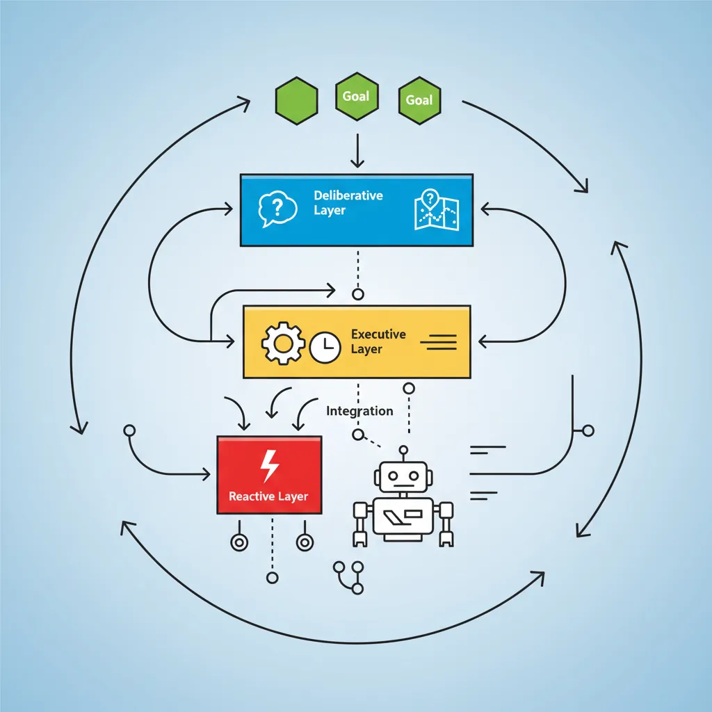
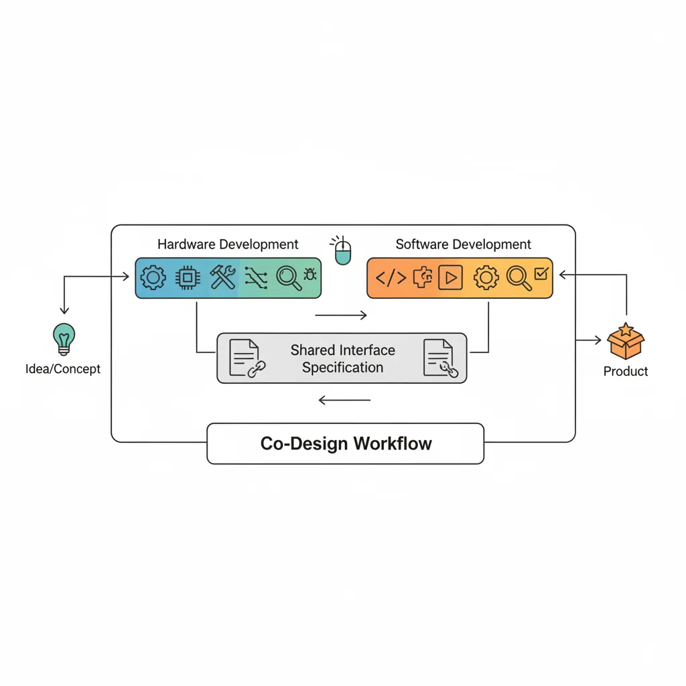
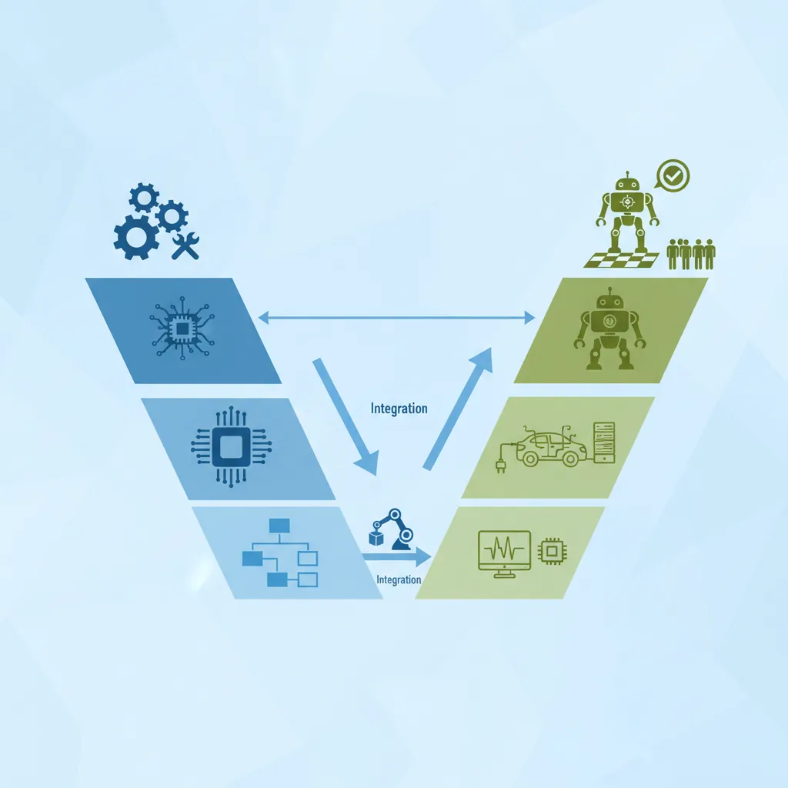
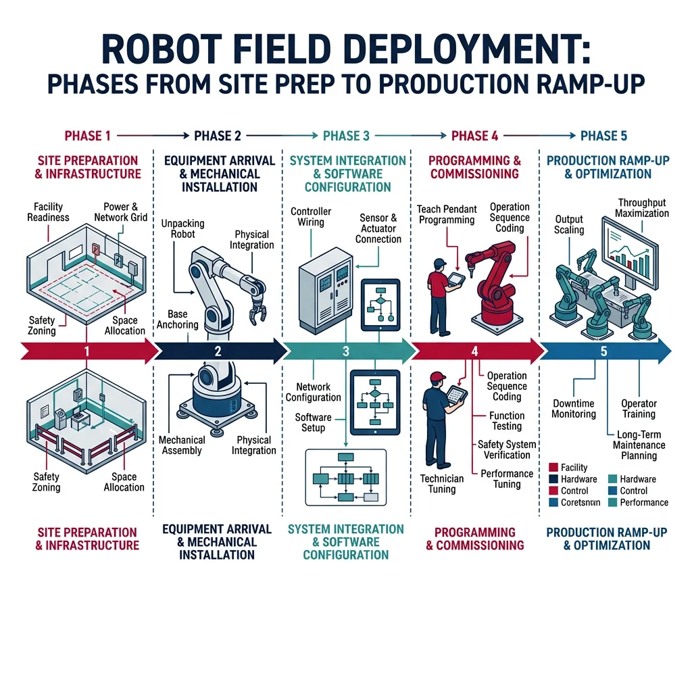
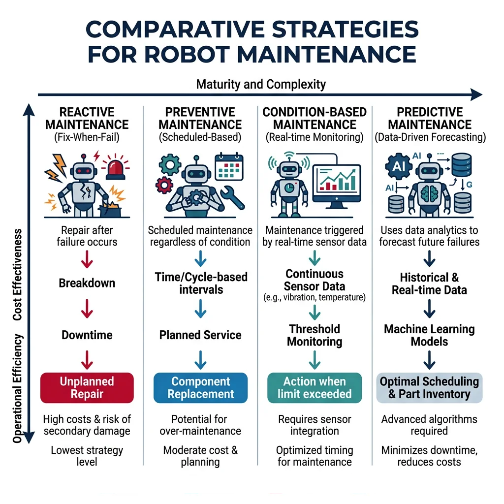

System Architecture
Robotics & Automation Mastery
Introduction to Robotics
History, types, DOF, architectures, mechatronics, ethicsSensors & Perception Systems
Encoders, IMUs, LiDAR, cameras, sensor fusion, Kalman filters, SLAMActuators & Motion Control
DC/servo/stepper motors, hydraulics, drivers, gear systemsKinematics (Forward & Inverse)
DH parameters, transformations, Jacobians, workspace analysisDynamics & Robot Modeling
Newton-Euler, Lagrangian, inertia, friction, contact modelingControl Systems & PID
PID tuning, state-space, LQR, MPC, adaptive & robust controlEmbedded Systems & Microcontrollers
Arduino, STM32, RTOS, PWM, serial protocols, FPGARobot Operating Systems (ROS)
ROS2, nodes, topics, Gazebo, URDF, navigation stacksComputer Vision for Robotics
Calibration, stereo vision, object recognition, visual SLAMAI Integration & Autonomous Systems
ML, reinforcement learning, path planning, swarm roboticsHuman-Robot Interaction (HRI)
Cobots, gesture/voice control, safety standards, social roboticsIndustrial Robotics & Automation
PLC, SCADA, Industry 4.0, smart factories, digital twinsMobile Robotics
Wheeled/legged robots, autonomous vehicles, drones, marine roboticsSafety, Reliability & Compliance
Functional safety, redundancy, ISO standards, cybersecurityAdvanced & Emerging Robotics
Soft robotics, bio-inspired, surgical, space, nano-roboticsSystems Integration & Deployment
HW/SW co-design, testing, field deployment, lifecycleRobotics Business & Strategy
Startups, product-market fit, manufacturing, go-to-marketComplete Robotics System Project
Autonomous rover, pick-and-place arm, delivery robot, swarm simBuilding individual subsystems — sensors, actuators, controllers, AI — is the easy part. The hard part is making them all work together reliably, safely, and maintainably. Systems integration is the engineering discipline of combining subsystems into a complete, functioning robot and ensuring it performs correctly from the lab to the field and throughout its operational life.

Architecture Patterns
Robot system architectures typically follow one of several proven patterns, each trading off complexity, real-time performance, and modularity:
| Pattern | Structure | Pros | Cons | Example |
|---|---|---|---|---|
| Sense-Plan-Act (SPA) | Sequential pipeline | Simple, predictable | Slow, no reactivity | Early Shakey robot |
| Subsumption | Layered behaviors, priority-based | Reactive, real-time | Hard to scale, debug | iRobot Roomba (early) |
| Hybrid Deliberative-Reactive | 3-layer: reactive + executive + planner | Balanced speed/intelligence | Interface complexity | Most modern robots |
| Component-Based (ROS2) | Modular nodes + middleware | Reusable, testable | Communication overhead | ROS2-based systems |
| Microservices | Independent services + API | Scalable, cloud-native | Latency, orchestration | Cloud robotics platforms |
import numpy as np
import matplotlib.pyplot as plt
# Visualize the 3-Layer Hybrid Architecture
fig, ax = plt.subplots(figsize=(10, 6))
layers = [
{'name': 'Deliberative Layer\n(Planning & Reasoning)', 'y': 2.2, 'color': '#132440',
'desc': 'Path planning, task scheduling, mission logic\nCycle time: 100ms - 10s'},
{'name': 'Executive Layer\n(Coordination & Sequencing)', 'y': 1.2, 'color': '#16476A',
'desc': 'State machines, behavior trees, error recovery\nCycle time: 10ms - 100ms'},
{'name': 'Reactive Layer\n(Sensing & Control)', 'y': 0.2, 'color': '#3B9797',
'desc': 'PID loops, obstacle avoidance, safety stops\nCycle time: 1ms - 10ms'}
]
for layer in layers:
rect = plt.Rectangle((0.5, layer['y']), 9, 0.8, linewidth=2,
edgecolor='white', facecolor=layer['color'], alpha=0.9)
ax.add_patch(rect)
ax.text(5, layer['y'] + 0.55, layer['name'], ha='center', va='center',
fontsize=12, fontweight='bold', color='white')
ax.text(5, layer['y'] + 0.15, layer['desc'], ha='center', va='center',
fontsize=9, color='#dddddd', style='italic')
# Arrows
for y in [1.2, 2.2]:
ax.annotate('', xy=(5, y), xytext=(5, y - 0.2),
arrowprops=dict(arrowstyle='->', color='white', lw=2))
ax.set_xlim(0, 10)
ax.set_ylim(0, 3.5)
ax.set_title('3-Layer Hybrid Deliberative-Reactive Architecture', fontsize=14, fontweight='bold')
ax.axis('off')
plt.tight_layout()
plt.show()
HW/SW Co-Design
In traditional engineering, hardware is designed first, then software is written to control it. In HW/SW co-design, both are developed simultaneously with continuous feedback between teams. This prevents the costly situation where software requirements discover hardware limitations too late to change.

Co-Design Decision Matrix
| Decision | Hardware Impact | Software Impact | Resolution Strategy |
|---|---|---|---|
| Sensor selection | Mounting, wiring, power | Drivers, data formats, fusion | Joint evaluation with prototype |
| Compute platform | Size, cooling, connectors | OS, libraries, real-time | Benchmark target workloads |
| Communication bus | Cable routing, EMI shielding | Protocol stack, latency | Signal integrity analysis |
| Safety architecture | E-stop circuits, redundancy | Watchdogs, safe states | FMEA + safety standard review |
| Power budget | Battery, regulators, connectors | Sleep modes, task scheduling | Power profile measurement |
Interface Design & Contracts
When multiple teams build subsystems that must work together, interface contracts define exactly how they communicate — data formats, timing, error codes, and boundary conditions. Without contracts, integration becomes a debugging nightmare.
import json
# Example: Robot subsystem interface contract specification
interface_contract = {
"interface_name": "MotorController_v2",
"version": "2.1.0",
"provider": "Actuator Subsystem",
"consumer": "Motion Planning",
"protocol": "CAN-FD",
"messages": {
"SetVelocity": {
"id": "0x201",
"direction": "consumer → provider",
"payload": {
"joint_id": {"type": "uint8", "range": [0, 6]},
"velocity_rad_s": {"type": "float32", "range": [-6.28, 6.28]},
"acceleration_limit": {"type": "float32", "range": [0, 50.0]}
},
"rate_hz": 1000,
"latency_max_ms": 1,
"error_response": "NACK with error code"
},
"JointState": {
"id": "0x301",
"direction": "provider → consumer",
"payload": {
"joint_id": {"type": "uint8"},
"position_rad": {"type": "float32"},
"velocity_rad_s": {"type": "float32"},
"current_A": {"type": "float32"},
"temperature_C": {"type": "float32"},
"fault_flags": {"type": "uint16"}
},
"rate_hz": 1000,
"latency_max_ms": 0.5
}
},
"error_codes": {
"0x00": "OK",
"0x01": "Over-temperature",
"0x02": "Over-current",
"0x03": "Encoder fault",
"0x04": "Communication timeout",
"0xFF": "Unknown error"
}
}
print(json.dumps(interface_contract, indent=2))
print(f"\nTotal messages defined: {len(interface_contract['messages'])}")
print(f"Error codes defined: {len(interface_contract['error_codes'])}")
Case Study: NASA Mars 2020 — Interface Control Documents
NASA's Perseverance rover has over 100 Interface Control Documents (ICDs) — formal contracts between subsystems specifying every signal, connector pin, data format, and timing requirement. The Ingenuity helicopter alone required 47 ICDs defining its interfaces with the rover's power, communications, and deployment systems.
Key practice: Every ICD is version-controlled, change-managed, and requires formal review by both subsystem teams plus an independent systems engineer. This rigor prevented integration surprises on a mission where you can't send a technician 225 million km away.
Testing & Verification
Testing a robot is fundamentally different from testing software alone. A bug in a web app shows an error page; a bug in a robot arm can injure a person or destroy expensive hardware. Robotics testing follows the V-Model: each development phase has a corresponding test phase, from unit tests on individual components to full system acceptance tests.

The Testing Pyramid for Robotics
| Level | What's Tested | Tools | Coverage Target | Speed |
|---|---|---|---|---|
| Unit Tests | Individual functions, classes | pytest, gtest, Catch2 | >80% line coverage | Milliseconds |
| Component Tests | Single node/module with mocked I/O | ROS2 launch_testing, Mock HAL | All interfaces | Seconds |
| Integration Tests | Subsystem interactions | Docker compose, CI/CD pipelines | All data flows | Minutes |
| SIL (Software-in-the-Loop) | Full SW stack on simulated plant | Gazebo, Isaac Sim, MATLAB | All scenarios | Minutes-Hours |
| HIL (Hardware-in-the-Loop) | Real controller + simulated plant | dSPACE, NI, Speedgoat | Timing, I/O | Real-time |
| System Tests | Complete robot in lab | Test scripts, manual checks | All requirements | Hours-Days |
| Acceptance Tests | Customer requirements at site | FAT/SAT protocols | All user stories | Days |
import json
from datetime import datetime
class RobotTestSuite:
"""Automated test framework for robot subsystem testing."""
def __init__(self, robot_name):
self.robot_name = robot_name
self.results = []
self.start_time = datetime.now()
def run_test(self, test_name, test_func, category="unit"):
"""Execute a single test and record results."""
try:
result = test_func()
passed = result if isinstance(result, bool) else True
self.results.append({
"name": test_name,
"category": category,
"status": "PASS" if passed else "FAIL",
"timestamp": datetime.now().isoformat()
})
except Exception as e:
self.results.append({
"name": test_name,
"category": category,
"status": "ERROR",
"error": str(e),
"timestamp": datetime.now().isoformat()
})
def summary(self):
total = len(self.results)
passed = sum(1 for r in self.results if r["status"] == "PASS")
failed = sum(1 for r in self.results if r["status"] == "FAIL")
errors = sum(1 for r in self.results if r["status"] == "ERROR")
return {"total": total, "passed": passed, "failed": failed,
"errors": errors, "pass_rate": f"{passed/total*100:.1f}%" if total > 0 else "N/A"}
# Example: Test a motor controller interface
suite = RobotTestSuite("6-DOF Industrial Arm")
# Unit tests
suite.run_test("Joint velocity within limits", lambda: abs(3.14) <= 6.28, "unit")
suite.run_test("Encoder resolution check", lambda: 4096 >= 2048, "unit")
suite.run_test("Temperature sensor range", lambda: -40 <= 25 <= 150, "unit")
suite.run_test("CAN message ID valid", lambda: 0x201 <= 0x3FF, "unit")
# Integration tests
suite.run_test("Motor responds to velocity command", lambda: True, "integration")
suite.run_test("Emergency stop latency < 10ms", lambda: 8.5 < 10, "integration")
suite.run_test("All joints home successfully", lambda: True, "integration")
# System tests
suite.run_test("Pick-and-place cycle under 4s", lambda: 3.7 < 4.0, "system")
suite.run_test("Repeatability < 0.1mm", lambda: 0.05 < 0.1, "system")
result = suite.summary()
print(f"Test Results for: {suite.robot_name}")
print(f" Total: {result['total']}, Passed: {result['passed']}, "
f"Failed: {result['failed']}, Errors: {result['errors']}")
print(f" Pass Rate: {result['pass_rate']}")
print(f"\nDetailed Results:")
for r in suite.results:
icon = "✓" if r["status"] == "PASS" else "✗"
print(f" {icon} [{r['category']:12s}] {r['name']}: {r['status']}")
HIL & SIL Simulation
Software-in-the-Loop (SIL) runs the real control software against a simulated robot model on a desktop PC. Hardware-in-the-Loop (HIL) runs the real control software on the real control hardware, but connects it to a simulated plant model instead of real actuators and sensors. Both are critical for testing dangerous or expensive scenarios safely.
- SIL — Early development, algorithm tuning, CI/CD pipelines (fast, cheap, runs on any PC)
- HIL — Validates real-time performance, I/O timing, driver bugs, EMI effects (expensive, requires lab setup)
| Aspect | SIL | HIL |
|---|---|---|
| Hardware Required | Desktop/server only | Real controller + I/O + simulator |
| Timing Fidelity | Simulated clock (faster-than-real) | Real-time clock (1:1) |
| Cost | Low ($0 marginal) | High ($50k–$500k for HIL rig) |
| Bug Types Found | Logic, algorithms, state machines | Timing, I/O, driver, thermal |
| CI/CD Compatible | Yes (containerized) | Limited (physical rig needed) |
| Platforms | Gazebo, Isaac Sim, MATLAB/Simulink | dSPACE, NI VeriStand, Speedgoat |
Verification & Validation (V&V)
Verification asks: "Did we build the system right?" (does the implementation match the design?). Validation asks: "Did we build the right system?" (does the system meet the user's actual needs?). Both are required for safety-critical robotics.
import json
# Requirements traceability matrix — mapping requirements to tests
traceability_matrix = {
"REQ-001": {
"description": "Robot shall reach any point within 800mm radius workspace",
"source": "Customer Specification v2.3",
"priority": "Critical",
"verification_method": "Test",
"test_ids": ["SYS-T-001", "SYS-T-002"],
"status": "Verified",
"evidence": "Test report TR-2026-001, 100% workspace coverage measured"
},
"REQ-002": {
"description": "Emergency stop shall halt all motion within 50ms",
"source": "ISO 10218-1, Section 5.5",
"priority": "Safety-Critical",
"verification_method": "Test + Analysis",
"test_ids": ["SAF-T-010", "SAF-T-011", "SAF-A-003"],
"status": "Verified",
"evidence": "Measured 38ms worst-case, oscilloscope capture in TR-2026-005"
},
"REQ-003": {
"description": "System shall operate continuously for 16 hours between maintenance",
"source": "Operations Requirement OR-007",
"priority": "High",
"verification_method": "Demonstration",
"test_ids": ["REL-T-001"],
"status": "Validated",
"evidence": "72-hour endurance test completed, 0 unplanned stops"
},
"REQ-004": {
"description": "Position repeatability shall be ≤ ±0.05mm",
"source": "Quality Specification QS-12",
"priority": "Critical",
"verification_method": "Test",
"test_ids": ["SYS-T-015"],
"status": "Verified",
"evidence": "Laser tracker measurement: ±0.032mm (3σ)"
}
}
print("Requirements Traceability Matrix")
print("=" * 60)
for req_id, req in traceability_matrix.items():
status_icon = "✓" if req["status"] in ["Verified", "Validated"] else "○"
print(f"\n{status_icon} {req_id}: {req['description']}")
print(f" Priority: {req['priority']}")
print(f" Method: {req['verification_method']}")
print(f" Tests: {', '.join(req['test_ids'])}")
print(f" Status: {req['status']}")
verified = sum(1 for r in traceability_matrix.values() if r["status"] in ["Verified", "Validated"])
print(f"\n\nSummary: {verified}/{len(traceability_matrix)} requirements verified/validated")
Case Study: Tesla Autopilot — Shadow Mode Testing
Tesla's approach to validation is unique in robotics: Shadow Mode. New autonomy algorithms run silently alongside the production system on millions of customer vehicles. The shadow system makes predictions ("I would turn left here") without controlling the car, and these predictions are compared against what the human driver actually did.
Scale: With ~5 million vehicles collecting data, Tesla can validate against billions of real-world scenarios that no simulation or test track could reproduce — including rare "edge cases" like a mattress falling off a truck or a child running into the street from behind a parked car.
Lesson for robotics: Validation isn't just a phase — it's a continuous process. The most robust systems combine simulation (SIL), lab testing (HIL), and field data collection into a closed loop of continuous improvement.
Field Deployment
The gap between "works in the lab" and "works in the field" is where many robotics projects fail. Field deployment introduces real-world variables that the lab couldn't predict: dust, humidity, vibration, untrained operators, network outages, and interaction with legacy systems.

Installation & Commissioning
Commissioning is the structured process of verifying that a deployed robot meets its performance specifications at the customer site. It follows a formal protocol:
| Phase | Activities | Duration | Deliverable |
|---|---|---|---|
| Site Preparation | Power, air, network, floor anchorage, safety fencing | 1–2 weeks | Site readiness certificate |
| Mechanical Install | Unpack, position, bolt down, connect utilities | 1–3 days | Installation checklist |
| Electrical/Network | Wire I/O, configure network, connect PLCs | 1–3 days | I/O test report |
| Software Deployment | Load firmware, calibrate sensors, configure params | 1–2 days | Calibration certificates |
| FAT (Factory Acceptance) | Run standard test procedures at manufacturer | 1 day | FAT report (signed) |
| SAT (Site Acceptance) | Run customer-specific test procedures at site | 1–3 days | SAT report (signed) |
| Operator Training | Normal operation, fault recovery, maintenance | 2–5 days | Training sign-off |
| Ramp-Up | Gradual increase to full production speed | 1–4 weeks | Production readiness report |
Remote Monitoring & Telemetry
Once deployed, robots need continuous monitoring to detect degradation, predict failures, and optimize performance. Modern robot fleets stream telemetry data to cloud dashboards for real-time visibility across hundreds of deployed units.
import json
from datetime import datetime, timedelta
import random
class RobotTelemetryCollector:
"""Collect and analyze robot health telemetry data."""
def __init__(self, robot_id, location):
self.robot_id = robot_id
self.location = location
self.telemetry_log = []
def collect_sample(self):
"""Simulate collecting one telemetry sample."""
sample = {
"timestamp": datetime.now().isoformat(),
"robot_id": self.robot_id,
"location": self.location,
"joint_temperatures_C": [round(40 + random.gauss(0, 3), 1) for _ in range(6)],
"motor_currents_A": [round(2.5 + random.gauss(0, 0.5), 2) for _ in range(6)],
"cycle_time_s": round(3.2 + random.gauss(0, 0.1), 3),
"vibration_rms_g": round(0.15 + random.gauss(0, 0.02), 4),
"cpu_load_pct": round(45 + random.gauss(0, 8), 1),
"network_latency_ms": round(5 + random.gauss(0, 2), 1),
"uptime_hours": round(random.uniform(0, 720), 1),
"error_count_24h": random.randint(0, 3)
}
self.telemetry_log.append(sample)
return sample
def health_check(self):
"""Analyze latest telemetry for anomalies."""
if not self.telemetry_log:
return {"status": "NO_DATA"}
latest = self.telemetry_log[-1]
alerts = []
max_temp = max(latest["joint_temperatures_C"])
if max_temp > 55:
alerts.append(f"HIGH_TEMP: Joint at {max_temp}°C (limit: 55°C)")
if latest["vibration_rms_g"] > 0.25:
alerts.append(f"HIGH_VIBRATION: {latest['vibration_rms_g']}g (limit: 0.25g)")
if latest["cycle_time_s"] > 3.8:
alerts.append(f"SLOW_CYCLE: {latest['cycle_time_s']}s (target: 3.5s)")
if latest["error_count_24h"] > 5:
alerts.append(f"ERROR_RATE: {latest['error_count_24h']} errors/24h")
status = "CRITICAL" if len(alerts) > 2 else "WARNING" if alerts else "HEALTHY"
return {"status": status, "alerts": alerts, "robot_id": self.robot_id}
# Simulate fleet monitoring
fleet = [
RobotTelemetryCollector("ARM-001", "Assembly Line A"),
RobotTelemetryCollector("ARM-002", "Assembly Line A"),
RobotTelemetryCollector("ARM-003", "Welding Cell B"),
]
print("Robot Fleet Health Dashboard")
print("=" * 50)
for robot in fleet:
robot.collect_sample()
health = robot.health_check()
icon = {"HEALTHY": "🟢", "WARNING": "🟡", "CRITICAL": "🔴"}.get(health["status"], "⚪")
print(f"\n{icon} {health['robot_id']} ({robot.location}): {health['status']}")
if health.get("alerts"):
for alert in health["alerts"]:
print(f" âš {alert}")
else:
print(" All parameters nominal")
Diagnostics & Troubleshooting
When a deployed robot fails, every minute of downtime costs money. Effective diagnostics require structured fault trees, comprehensive logging, and remote access capabilities.
- Robot stopped → Why? → Emergency stop triggered
- E-stop triggered → Why? → Safety scanner detected obstacle
- Scanner detected obstacle → Why? → Dust buildup on scanner lens
- Dust on lens → Why? → No scheduled cleaning in maintenance plan
- No cleaning schedule → Why? → Environmental conditions not assessed during commissioning
- Root cause: Incomplete site assessment. Fix: Add weekly lens cleaning to maintenance schedule + install air curtains.
Lifecycle Management
A robot's lifecycle extends far beyond deployment. Industrial robots operate for 10–15 years, requiring planned maintenance, software updates, component replacements, and eventually decommissioning. Total Cost of Ownership (TCO) over the lifecycle often exceeds the purchase price by 3–5×.

Maintenance Strategies
| Strategy | Approach | Cost | Downtime | Best For |
|---|---|---|---|---|
| Reactive | Fix when it breaks | Low (initially) | High, unplanned | Non-critical, cheap equipment |
| Preventive (PM) | Scheduled intervals (time/cycle-based) | Medium | Planned, predictable | Standard industrial equipment |
| Condition-Based (CBM) | Monitor degradation indicators | Medium-High | Low, targeted | Expensive components (gearboxes) |
| Predictive (PdM) | ML models predict failure time | High (setup) | Minimal | Critical production equipment |
import numpy as np
import matplotlib.pyplot as plt
def predict_remaining_life(vibration_history, threshold=0.5, fit_order=2):
"""Predict remaining useful life from vibration trend data.
Uses polynomial curve fitting to extrapolate degradation trend.
"""
t = np.arange(len(vibration_history))
coeffs = np.polyfit(t, vibration_history, fit_order)
poly = np.poly1d(coeffs)
# Extrapolate to find when threshold is crossed
t_future = np.arange(len(vibration_history), len(vibration_history) + 500)
predicted = poly(t_future)
cross_idx = np.where(predicted >= threshold)[0]
if len(cross_idx) > 0:
rul = cross_idx[0] # days until failure
else:
rul = 500 # beyond prediction horizon
return rul, poly, t_future, predicted
# Simulated vibration degradation data (6 months of daily readings)
np.random.seed(42)
days = 180
t = np.arange(days)
# Exponential degradation with noise
vibration = 0.1 + 0.001 * t + 0.00005 * t**2 + np.random.normal(0, 0.01, days)
rul, model, t_future, predicted = predict_remaining_life(vibration, threshold=0.5)
plt.figure(figsize=(10, 5))
plt.plot(t, vibration, 'b.', alpha=0.5, markersize=3, label='Measured Vibration')
plt.plot(t_future, predicted, 'r--', linewidth=1.5, label='Predicted Trend')
plt.axhline(y=0.5, color='orange', linestyle='-', linewidth=2, label='Failure Threshold')
plt.axvline(x=days + rul, color='green', linestyle=':', linewidth=2,
label=f'Predicted Failure: Day {days + rul}')
plt.fill_betweenx([0, 0.7], days, days + rul, alpha=0.1, color='green')
plt.xlabel('Days Since Installation')
plt.ylabel('Vibration RMS (g)')
plt.title(f'Predictive Maintenance: Remaining Useful Life = {rul} days')
plt.legend()
plt.grid(True, alpha=0.3)
plt.tight_layout()
plt.show()
print(f"Current vibration: {vibration[-1]:.3f}g")
print(f"Threshold: 0.500g")
print(f"Predicted failure in: {rul} days")
print(f"Recommended maintenance window: {max(0, rul - 30)} - {rul - 7} days from now")
Upgrades & Retrofits
Robotic systems evolve over their lifetime. Software upgrades (new algorithms, bug fixes, security patches) are relatively low-risk. Hardware retrofits (adding sensors, upgrading controllers, replacing end-effectors) require careful planning to avoid breaking existing functionality.
Decommissioning & Disposal
When a robot reaches end-of-life, decommissioning involves: (1) data backup and IP protection — erase proprietary algorithms and production data, (2) environmental compliance — batteries (Li-ion hazardous waste), lubricants, hydraulic fluids require certified disposal, (3) salvage assessment — motors, sensors, and controllers can often be refurbished for secondary markets, and (4) site restoration — remove foundations, fencing, and utility connections.
Case Study: FANUC Lifecycle Management — 30+ Year Support
FANUC is renowned for long-term support of its robot controllers. The R-30iB controller (released 2014) maintains backward compatibility with robots from the 2000s. FANUC maintains spare parts availability for 25+ years after discontinuation — critical for automotive plants where a robot cell might run for 15 years.
Lifecycle economics: A FANUC robot costs ~$50,000–$200,000 to purchase but generates $500,000–$2,000,000 in value over its 10–15 year operational life. Predictive maintenance extends life by 20-30%, while retrofit programs (new grippers, vision systems) keep existing robots productive without full replacement.
Integration Checklist Planner
Use this tool to plan your robot systems integration project. Capture the system name, architecture pattern, testing strategy, deployment site details, and export a structured checklist document.
Systems Integration Planner
Plan your integration, testing, and deployment activities. Download as Word, Excel, or PDF.
All data stays in your browser. Nothing is sent to or stored on any server.
Exercises & Challenges
Exercise 1: Interface Contract Validator
Task: Write a Python function that takes two interface contract dictionaries (provider and consumer) and validates that they are compatible — matching message IDs, data types, rate requirements, and latency constraints. Return a list of mismatches found.
Bonus: Add version compatibility checking — the consumer should work with any provider whose version is ≥ the consumer's minimum required version (semantic versioning).
Exercise 2: Build a Deployment Checklist Generator
Task: Create a Python script that reads a robot system specification (subsystems list, I/O count, safety requirements) and automatically generates a commissioning checklist with sequential tasks, estimated durations, dependencies, and sign-off fields. Output as a formatted table.
Exercise 3: Predictive Maintenance Dashboard
Task: Extend the telemetry collector code to simulate a fleet of 10 robots over 30 days. Implement a simple anomaly detector that flags robots whose vibration or temperature trends exceed 2 standard deviations from the fleet average. Generate a daily fleet health summary report.
Conclusion & Next Steps
Systems integration is the discipline that transforms individual subsystems into a reliable, deployable robot. The key principles to remember:
- Architecture First — Choose the right pattern (hybrid 3-layer for most robots) before writing code
- Interface Contracts — Define data formats, timing, error codes formally between every subsystem pair
- Test Pyramid — Unit → Component → Integration → SIL → HIL → System → Acceptance, each level catches different bugs
- Structured Commissioning — FAT/SAT protocols, operator training, and gradual ramp-up reduce deployment risk
- Continuous Monitoring — Telemetry enables predictive maintenance and prevents unplanned downtime
- Lifecycle Thinking — Total cost of ownership, not just purchase price, drives the business case